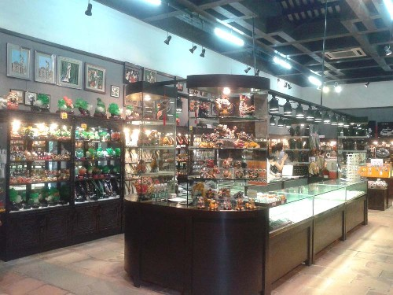

后东斋
广州刺绣
粤绣是中国四大名绣之一。广州、佛山、南海、番禺和顺德等地区的刺绣统称广绣。广绣工艺历史悠久，明、清时期技艺更为精湛，绣品远销国外。值得一提的是，清末民初，很多男子专门从事刺绣工作，广绣师傅多为男性，而且男工的刺绣技艺一般比较高，这种特有的现象给传统广绣艺术增添了传奇的色彩。广州传统刺绣有日用品和欣赏品，多以岭南佳果、松鹤凤凰和吉祥图案为题材，色彩瑰丽。现代刺绣以欣赏品为主，在继承传统针法的基础上，吸收各画种的长处，融会贯通，不断创新发展，把广绣艺术推向一个更高的水平。
粤绣是中国四大名绣之一。广州、佛山、南海、番禺和顺德等地区的刺绣统称广绣。广绣工艺历史悠久，明、清时期技艺更为精湛，绣品远销国外。值得一提的是，清末民初，很多男子专门从事刺绣工作，广绣师傅多为男性，而且男工的刺绣技艺一般比较高，这种特有的现象给传统广绣艺术增添了传奇的色彩。广州传统刺绣有日用品和欣赏品，多以岭南佳果、松鹤凤凰和吉祥图案为题材，色彩瑰丽。现代刺绣以欣赏品为主，在继承传统针法的基础上，吸收各画种的长处，融会贯通，不断创新发展，把广绣艺术推向一个更高的水平。